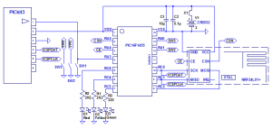

Wireless communication between devices is very appealing, but designing the hardware and writing the software can seem daunting. There are expensive solutions, but I’m going to show how to communicate using the nRF24L01 which can be purchased for around 60p (about US $1), or less. The nRF24L01 works in the 2.4GHz band and has a good range; In tests, I have managed 20 – 30 metres inside though lots of concrete and steel, and over 150 metres outside (line of sight). My top tip for getting a good range is to use the 250kbps rate, and keep the packets short – for my tests I was using a packet length of 6 bytes:
| 1. preamble | |
2. Address 1 | |
3. Address 2 | |
4. Address 3 | |
5. payload | |
6. crc |
I am going to show how to use the nRF24L01 with PIC16F1455 boards and/or chipKIT uC32 boards. I am not going to say too much about the hardware here, because I think the more difficult issue is getting the software right. Suffice to say that the nRF24L01 has a relatively simple interface, but most of the modules that you get have 2×4 pins which won’t just plug straight into a uC32 (or Arduino) board. You can see more about the hardware by following this link. To keep things simple here, we only need to worry about the circuit, which is as follows:

As you can see, there are three switches and three LEDs. Our program is going to be very simple. The nRF24L01 has an auto acknowledgement mode which is supposed to simplify things. Does it? Well maybe, but it certainly doesn’t make it easier to understand. I wouldn’t recommend it if you are trying to understand how these modules work and how to use them. So we won’t be using that. Fairly obviously, we are going to need two modules, one for “transmit” and one for “receive”. I have used quotes for transmit and receive because actually both modules will be transmitting and receiving. The “transmitter” sends a packet when one of the buttons is pressed; It then immediately goes into receive mode and waits for a short amount of time to see if a packet is received. The “receiver” is continuously waiting for packets. When a valid packet is received the “receiver” goes into transmit mode and re-transmits the packet – hopefully the “transmitter” will receive this and light one of the LEDs. This gives us a visual indication that the packet has completed a round trip to the other transceiver and back again. There is more detail about this here.
The source code for the uC32 board looks like this:
#include <SPI.h>
//Pins
const int csnPin = 7;
const int cePin = 9;
const int irqPin = 8;
//Commands
const byte R_REG = 0x00;
const byte W_REG = 0x20;
const byte RX_PAYLOAD = 0x61;
const byte TX_PAYLOAD = 0xA0;
const byte FLUSH_TX = 0xE1;
const byte FLUSH_RX = 0xE2;
const byte ACTIVATE = 0x50;
const byte R_STATUS = 0xFF;
//Registers
const byte CONFIG = 0x00;
const byte EN_AA = 0x01;
const byte EN_RXADDR = 0x02;
const byte SETUP_AW = 0x03;
const byte SETUP_RETR = 0x04;
const byte RF_CH = 0x05;
const byte RF_SETUP = 0x06;
const byte STATUS = 0x07;
const byte OBSERVE_TX = 0x08;
const byte CD = 0x09;
const byte RX_ADDR_P0 = 0x0A;
const byte RX_ADDR_P1 = 0x0B;
const byte RX_ADDR_P2 = 0x0C;
const byte RX_ADDR_P3 = 0x0D;
const byte RX_ADDR_P4 = 0x0E;
const byte RX_ADDR_P5 = 0x0F;
const byte TX_ADDR = 0x10;
const byte RX_PW_P0 = 0x11;
const byte RX_PW_P1 = 0x12;
const byte RX_PW_P2 = 0x13;
const byte RX_PW_P3 = 0x14;
const byte RX_PW_P4 = 0x15;
const byte RX_PW_P5 = 0x16;
const byte FIFO_STATUS = 0x17;
const byte DYNPD = 0x1C;
const byte FEATURE = 0x1D;
//Data
byte RXTX_ADDR[3] = { 0xB5, 0x23, 0xA5 }; //Randomly chosen address
//Local Helper Function Prototypes
void FlushTXRX();
void WriteRegister(byte reg, byte val);
void WriteAddress(byte reg, byte num, byte* addr);
byte ReadRegister(byte reg);
void WriteCommand(byte command);
void WritePayload(byte num, byte* data);
void ReadPayload(byte num, byte* data);
void nRF_Setup()
{
// start the SPI library:
SPI.begin();
// initalize the CSN and CE pins:
pinMode(csnPin, OUTPUT);
pinMode(cePin, OUTPUT);
pinMode(irqPin, INPUT);
digitalWrite(csnPin, HIGH);
digitalWrite(cePin, LOW);
// give the nRF24L01 time to set up:
delay(2);
WriteRegister(CONFIG, 0x0B); //1 byte CRC, POWER UP, PRX
WriteRegister(EN_AA, 0x00); //Disable auto ack
WriteRegister(EN_RXADDR, 0x01); //Enable data pipe 0
WriteRegister(SETUP_AW, 0x01); //3 byte address
WriteRegister(SETUP_RETR, 0x00); //Retransmit disabled
WriteRegister(RF_CH, 0x01); //Randomly chosen RF channel
WriteRegister(RF_SETUP, 0x26); //250kbps, 0dBm
WriteRegister(RX_PW_P0, 0x01); //RX payload = 1 byte
WriteAddress(RX_ADDR_P0, 3, RXTX_ADDR);
WriteAddress(TX_ADDR, 3, RXTX_ADDR);
FlushTXRX();
Serial.println("Initialized");
}
void RXMode()
{
WriteRegister(CONFIG, 0x0B); //1 byte CRC, POWER UP, PRX
digitalWrite(cePin, HIGH);
}
void TXMode()
{
digitalWrite(cePin, LOW);
WriteRegister(CONFIG, 0x0A); //1 byte CRC, POWER UP, PTX
}
void PowerDown()
{
digitalWrite(cePin, LOW);
WriteRegister(CONFIG, 0);
}
byte RXChar()
{
byte data;
ReadPayload(1, &data);
//Clear status bit
WriteRegister(STATUS, 0x40);
return data;
}
void TXChar(byte ch)
{
WritePayload(1, &ch);
//Wait for char to be sent
byte stat;
do
{
stat = ReadStatus();
} while ((stat & 0x20) == 0);
//Clear status bit
WriteRegister(STATUS, 0x20);
}
boolean ReadDataAvailable()
{
if (digitalRead(cePin) == LOW)
return false;
byte stat = ReadStatus();
return (stat & 0x40) != 0;
}
void DumpRegisters()
{
for (int i=0; i<10; i++)
{
digitalWrite(csnPin, LOW);
SPI.transfer(R_REG | i);
// send a value of 0 to read the first byte returned:
byte result = SPI.transfer(0x00);
Serial.print("Reg (");
PrintHex(i, 2);
Serial.print(") = ");
PrintHex(result, 2);
Serial.println();
digitalWrite(csnPin, HIGH);
}
Serial.print("IRQ = ");
Serial.println(digitalRead(irqPin), DEC);
}
// *************** Helper Methods ***************
void FlushTXRX()
{
//Clear: data RX ready, data sent TX, Max TX retransmits
WriteRegister(STATUS, 0x70);
WriteCommand(FLUSH_RX);
WriteCommand(FLUSH_TX);
}
void WriteRegister(byte reg, byte val)
{
digitalWrite(csnPin, LOW);
SPI.transfer(W_REG | reg);
SPI.transfer(val);
digitalWrite(csnPin, HIGH);
}
//Address is 3-5 bytes, LSB first
void WriteAddress(byte reg, byte num, byte* addr)
{
digitalWrite(csnPin, LOW);
SPI.transfer(W_REG | reg);
for (byte i=0; i<num; i++)
SPI.transfer(addr[i]);
digitalWrite(csnPin, HIGH);
}
byte ReadRegister(byte reg)
{
digitalWrite(csnPin, LOW);
SPI.transfer(R_REG | reg);
byte val = SPI.transfer(0x00);
digitalWrite(csnPin, HIGH);
return val;
}
byte ReadStatus()
{
digitalWrite(csnPin, LOW);
byte val = SPI.transfer(R_STATUS);
digitalWrite(csnPin, HIGH);
return val;
}
void WriteCommand(byte command)
{
digitalWrite(csnPin, LOW);
SPI.transfer(command);
digitalWrite(csnPin, HIGH);
}
void WritePayload(byte num, byte* data)
{
digitalWrite(csnPin, LOW);
SPI.transfer(TX_PAYLOAD);
for (byte i=0; i<num; i++)
SPI.transfer(data[i]);
digitalWrite(csnPin, HIGH);
digitalWrite(cePin, HIGH);
for (int i=0; i<100;i++)
asm("nop");
digitalWrite(cePin, LOW);
}
void ReadPayload(byte num, byte* data)
{
digitalWrite(csnPin, LOW);
SPI.transfer(RX_PAYLOAD);
for (byte i=0; i<num; i++)
data[i] = SPI.transfer(0);
digitalWrite(csnPin, HIGH);
}
I put the code above in a file called nRF24L01.pde. To use these low-level functions I created the following functions:
boolean SendChar(char* args)
{
boolean charReceived = false;
TXChar(args[0]);
RXMode();
delay(2);
if (ReadDataAvailable())
{
Serial.print("RX = ");
byte ch = RXChar();
Serial.println(ch);
charReceived = true;
}
TXMode();
Serial.println("Char sent");
return charReceived;
}
void ReceiveChar()
{
byte ch = RXChar();
TXMode();
TXChar(ch);
RXMode();
Serial.print("RX = ");
Serial.println(ch);
}
You can see that SendChar() sends a single character, immediately enters receive mode and waits 2 milliseconds to receive the echoed response. Theoretically the packet should be received after 330 microseconds at 250kbps (including the 130uS TX/RX switching time), so 2ms should be more than enough.
ReceiveChar() resends the character sent to it. It should be called in a loop similar to the following:
void loop()
{
if (ReadDataAvailable())
{
ReceiveChar();
}
}
So that’s the uC32 code, what about the PIC16F1455 code? The code for this is similar, but we have to write our own SPI functions. These look like this:
/*
* File: spi.h
*/
#ifndef SPI_H
#define SPI_H
#ifdef __cplusplus
extern "C" {
#endif
void SPI_init();
BYTE SPI_transfer(BYTE data);
#ifdef __cplusplus
}
#endif
#endif /* SPI_H */
/*
* File: spi.c
*/
#include
#include
#include "spi.h"
void SPI_init()
{
SSPEN = 0;
TRISC0 = 0; //SCK
ANSC1 = 0; //SDI
TRISC2 = 0; //SDO
CKE = 1;
SSPCON1 = 0x01; //CKP = 0, SCK = 1MHz
SMP = 1;
SSPEN = 1;
}
BYTE SPI_transfer(BYTE data)
{
SSPBUF = data; // Put command into SPI buffer
while (!BF); // Wait for the transfer to finish
return SSPBUF; // Save the read value
}
The settings in SPI_init() are important. CKE, SSPCON1 and SMP determine the SPI timings. If we get these wrong the nRF24L01 won’t communicate with us reliably. The settings must be: CKE = 1, CKP = 0 and SMP = 1. If you want to know which edges of the waveforms are used then you can work this out from the datasheet, or you can just trust me if I say that these settings work!
The nRF24L01 files are similar to the uC32 ones, with a few modifications:
/*
nRF24L01 Header
*/
void nRF_Setup();
void RXMode();
void TXMode();
void PowerDown();
BYTE RXChar();
void TXChar(BYTE ch);
BOOL ReadDataAvailable();
void FlushTXRX();
/*
nRF24L01 Interface
*/
#include
#include
#include "spi.h"
#include "nRF24L01.h"
//Pins
#define triscsn TRISA5
#define trisce TRISA4
#define csnPin RA5
#define cePin RA4
//#define irqPin
//Commands
const BYTE R_REG = 0x00;
const BYTE W_REG = 0x20;
const BYTE RX_PAYLOAD = 0x61;
const BYTE TX_PAYLOAD = 0xA0;
const BYTE FLUSH_TX = 0xE1;
const BYTE FLUSH_RX = 0xE2;
const BYTE ACTIVATE = 0x50;
const BYTE R_STATUS = 0xFF;
//Registers
const BYTE NRF_CONFIG = 0x00;
const BYTE EN_AA = 0x01;
const BYTE EN_RXADDR = 0x02;
const BYTE SETUP_AW = 0x03;
const BYTE SETUP_RETR = 0x04;
const BYTE RF_CH = 0x05;
const BYTE RF_SETUP = 0x06;
const BYTE NRF_STATUS = 0x07;
const BYTE OBSERVE_TX = 0x08;
const BYTE CD = 0x09;
const BYTE RX_ADDR_P0 = 0x0A;
const BYTE RX_ADDR_P1 = 0x0B;
const BYTE RX_ADDR_P2 = 0x0C;
const BYTE RX_ADDR_P3 = 0x0D;
const BYTE RX_ADDR_P4 = 0x0E;
const BYTE RX_ADDR_P5 = 0x0F;
const BYTE TX_ADDR = 0x10;
const BYTE RX_PW_P0 = 0x11;
const BYTE RX_PW_P1 = 0x12;
const BYTE RX_PW_P2 = 0x13;
const BYTE RX_PW_P3 = 0x14;
const BYTE RX_PW_P4 = 0x15;
const BYTE RX_PW_P5 = 0x16;
const BYTE FIFO_STATUS = 0x17;
const BYTE DYNPD = 0x1C;
const BYTE FEATURE = 0x1D;
//Data
BYTE RXTX_ADDR[3] = { 0xB5, 0x23, 0xA5 }; //Randomly chosen address
BOOL rfCardPresent = FALSE;
//Local Helper Function Prototypes
void FlushTXRX();
void WriteRegister(BYTE reg, BYTE val);
void WriteAddress(BYTE reg, BYTE num, BYTE* addr);
BYTE ReadRegister(BYTE reg);
BYTE ReadStatus();
void WriteCommand(BYTE command);
void WritePayload(BYTE num, BYTE* data);
void ReadPayload(BYTE num, BYTE* data);
void nRF_Setup()
{
// start the SPI library:
SPI_init();
// initalize the CSN and CE pins:
triscsn = 0;
trisce = 0;
csnPin = 1;
cePin = 0;
WriteRegister(NRF_CONFIG, 0x0B); //1 BYTE CRC, POWER UP, PRX
WriteRegister(EN_AA, 0x00); //Disable auto ack
WriteRegister(EN_RXADDR, 0x01); //Enable data pipe 0
WriteRegister(SETUP_AW, 0x01); //3 BYTE address
WriteRegister(SETUP_RETR, 0x00); //Retransmit disabled
WriteRegister(RF_CH, 0x01); //Randomly chosen RF channel
WriteRegister(RF_SETUP, 0x26); //250kbps, 0dBm
WriteRegister(RX_PW_P0, 0x01); //RX payload = 1 BYTE
WriteAddress(RX_ADDR_P0, 3, RXTX_ADDR);
WriteAddress(TX_ADDR, 3, RXTX_ADDR);
FlushTXRX();
if ((ReadRegister(NRF_CONFIG) & 0x08) != 0)
rfCardPresent = TRUE;
}
void RXMode()
{
WriteRegister(NRF_CONFIG, 0x0B); //1 BYTE CRC, POWER UP, PRX
cePin = 1;
//According to the datasheet we shouldn't bring CSN low
// within Tpece2csn
//after setting ce high. Can't see why (or when that would
// happen though)
//so comment out the next line.
//__delay_us(4); //Tpece2csn
}
void TXMode()
{
cePin = 0;
WriteRegister(NRF_CONFIG, 0x0A); //1 BYTE CRC, POWER UP, PTX
}
void PowerDown()
{
cePin = 0;
WriteRegister(NRF_CONFIG, 0);
}
BYTE RXChar()
{
BYTE data;
ReadPayload(1, &data);
//Clear status bit
WriteRegister(NRF_STATUS, 0x40);
return data;
}
void TXChar(BYTE ch)
{
WritePayload(1, &ch);
if (rfCardPresent)
{
//Wait for char to be sent
BYTE stat;
do
{
stat = ReadStatus();
} while ((stat & 0x20) == 0);
}
//Clear status bit
WriteRegister(NRF_STATUS, 0x20);
}
BOOL ReadDataAvailable()
{
BYTE stat = ReadStatus();
return (stat & 0x40) != 0;
}
void FlushTXRX()
{
WriteRegister(NRF_STATUS, 0x70);
WriteCommand(FLUSH_RX);
WriteCommand(FLUSH_TX);
}
// *************** Helper Methods ***************
void WriteRegister(BYTE reg, BYTE val)
{
csnPin = 0;
SPI_transfer(W_REG | reg);
SPI_transfer(val);
csnPin = 1;
}
//Address is 3-5 bytes, LSB first
void WriteAddress(BYTE reg, BYTE num, BYTE* addr)
{
csnPin = 0;
SPI_transfer(W_REG | reg);
for (BYTE i=0; i<num; i++)
SPI_transfer(addr[i]);
csnPin = 1;
}
BYTE ReadRegister(BYTE reg)
{
csnPin = 0;
SPI_transfer(R_REG | reg);
BYTE val = SPI_transfer(0x00);
csnPin = 1;
return val;
}
BYTE ReadStatus()
{
csnPin = 0;
BYTE val = SPI_transfer(R_STATUS);
csnPin = 1;
return val;
}
void WriteCommand(BYTE command)
{
csnPin = 0;
SPI_transfer(command);
csnPin = 1;
}
void WritePayload(BYTE num, BYTE* data)
{
csnPin = 0;
SPI_transfer(TX_PAYLOAD);
for (BYTE i=0; i<num; i++)
SPI_transfer(data[i]);
csnPin = 1;
cePin = 1;
__delay_us(12); //Thce (10us) + a bit (2us)
cePin = 0;
}
void ReadPayload(BYTE num, BYTE* data)
{
csnPin = 0;
SPI_transfer(RX_PAYLOAD);
for (BYTE i=0; i<num; i++)
data[i] = SPI_transfer(0);
csnPin = 1;
}


{kind=link}
{kind=link}
{kind=link}